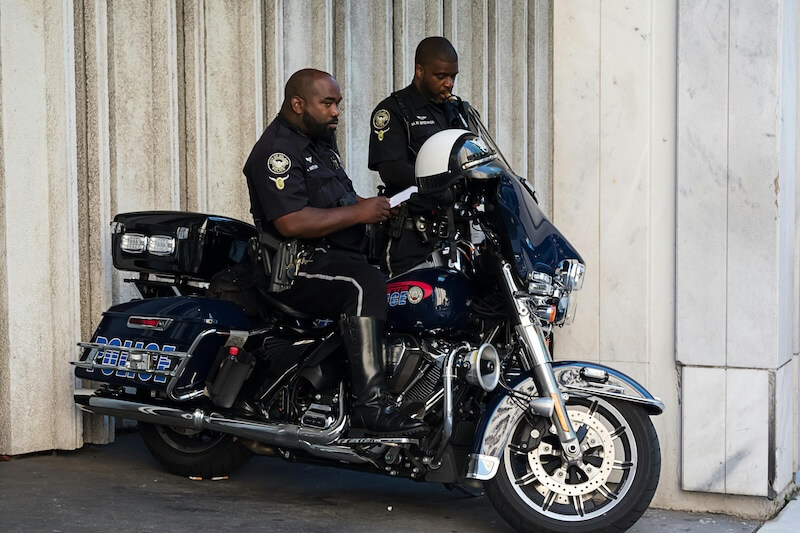

Public Safety
Find emergency services, safety guides, and who to connect to when you need help.
Overview
Macon County is fully equipped and ready to provide help to those in need, our emergency response team works together to protect residents and provide support in critical situations.
In an emergency, please always call 911. For non-emergency situations, you can contact local departments directly for assistance, reports or general questions, this page will help you to quickly find the right service as well as provide information about our emergency response teams in Macon County.
Macon County Police Department
The Macon County Police Department is responsible for maintaining public safety, enforcing laws and responding to emergencies, Our officers work hard to protect our community and provide assistance to residents when needed.

Fire Departments
Macon County has a total of 11 fire stations ready and fully equipped to respond to fires, rescue emergencies and hazardous situations. In addition to being first responders our fire departments offer fire prevention education and community programs to help educate our community.
Macon County EMS
Macon County EMS provides emergency medical care and transportation during critical situations. Our trained professionals respond quickly to medical emergencies and work with local hospitals to ensure patients receive proper care.
Emergency Contacts
If you are experiencing an emergency , call 911 immediately. For non-emergency situations, use the information below to reach out to local services